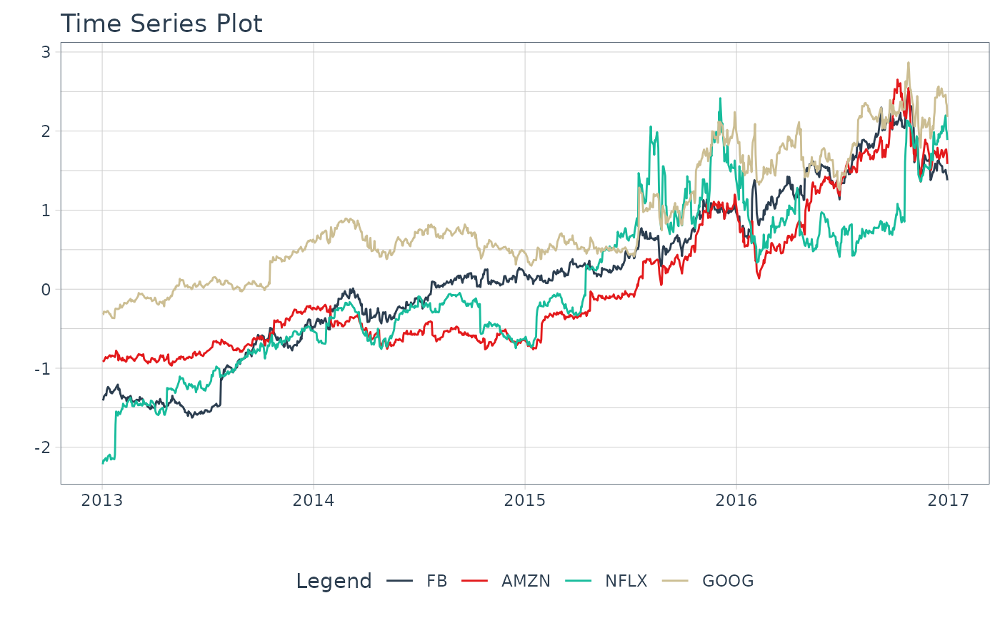

R/recipes-step_log_interval.R
step_log_interval.Rdstep_log_interval creates a specification of a recipe
step that will transform data using a Log-Inerval
transformation. This function provides a recipes interface
for the log_interval_vec() transformation function.
step_log_interval( recipe, ..., limit_lower = "auto", limit_upper = "auto", offset = 0, role = NA, trained = FALSE, limit_lower_trained = NULL, limit_upper_trained = NULL, skip = FALSE, id = rand_id("log_interval") ) # S3 method for step_log_interval tidy(x, ...)
| recipe | A |
|---|---|
| ... | One or more selector functions to choose which
variables are affected by the step. See |
| limit_lower | A lower limit. Must be less than the minimum value. If set to "auto", selects zero. |
| limit_upper | An upper limit. Must be greater than the maximum value. If set to "auto", selects a value that is 10% greater than the maximum value. |
| offset | An offset to include in the log transformation. Useful when the data contains values less than or equal to zero. |
| role | Not used by this step since no new variables are created. |
| trained | A logical to indicate if the quantities for preprocessing have been estimated. |
| limit_lower_trained | A numeric vector of transformation values. This
is |
| limit_upper_trained | A numeric vector of transformation values. This
is |
| skip | A logical. Should the step be skipped when the recipe
is baked by |
| id | A character string that is unique to this step to identify it. |
| x | A |
An updated version of recipe with the new step
added to the sequence of existing steps (if any). For the
tidy method, a tibble with columns terms (the
selectors or variables selected) and value (the
lambda estimate).
The step_log_interval() function is designed specifically to handle time series
using methods implemented in the Forecast R Package.
Positive Data
If data includes values of zero, use offset to adjust the series to make the values positive.
Implementation
Refer to the log_interval_vec() function for the transformation implementation details.
Time Series Analysis:
Engineered Features: step_timeseries_signature(), step_holiday_signature(), step_fourier()
Diffs & Lags step_diff(), recipes::step_lag()
Smoothing: step_slidify(), step_smooth()
Variance Reduction: step_log_interval()
Imputation: step_ts_impute(), step_ts_clean()
Padding: step_ts_pad()
Transformations to reduce variance:
recipes::step_log() - Log transformation
recipes::step_sqrt() - Square-Root Power Transformation
Recipe Setup and Application:
library(tidyverse) library(tidyquant) library(recipes) library(timetk) FANG_wide <- FANG %>% select(symbol, date, adjusted) %>% pivot_wider(names_from = symbol, values_from = adjusted) recipe_log_interval <- recipe(~ ., data = FANG_wide) %>% step_log_interval(FB, AMZN, NFLX, GOOG, offset = 1) %>% prep() recipe_log_interval %>% bake(FANG_wide) %>% pivot_longer(-date) %>% plot_time_series(date, value, name, .smooth = FALSE, .interactive = FALSE)#> # A tibble: 4 x 5 #> terms limit_lower limit_upper offset id #> <chr> <dbl> <dbl> <dbl> <chr> #> 1 FB 0 144. 1 log_interval_9QeuR #> 2 AMZN 0 904. 1 log_interval_9QeuR #> 3 NFLX 0 143. 1 log_interval_9QeuR #> 4 GOOG 0 859. 1 log_interval_9QeuR